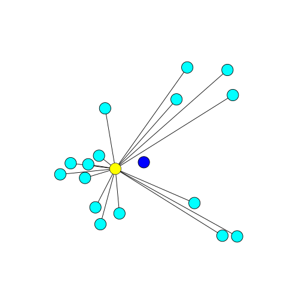

Chapter 12 无约束优化 {Optimization without constraintss}
12.1 例子
之前我们讨论了许多优化问题：
| 问题 | 目标函数 | 约束 |
|---|---|---|
| 最小二乘法 | \(E(\vec{x}) = \parallel A\vec{x} - \vec{b} \parallel^2\) | 无 |
| 把\(\vec{b}\) 投影到 \(\vec{a}\) 上 | \(E(c) = \parallel c\vec{a} - \vec{b} \parallel^2\) | 无 |
| 实对称矩阵的特征向量 | \(E(\vec{x}) = \vec{x}^TA\vec{x}\) | \(\parallel \vec{x} \parallel = 1\) |
| Pseudoinverse | \(E(\vec{x}) = \parallel \vec{x} \parallel^2\) | \(A^TA\vec{x} = A^T\vec{b}\) |
| 主成分分析 | \(E(C) = \parallel X - CC^TX \parallel_{Fro}\) | \(C^TC = I_{d \times d}\) |
| Broyden step | \(E(J_k) = \parallel J_k - J_{k-1} \parallel_{Fro}^2\) | \(J_k \cdot (\vec{x}_k - \vec{x}_{k-1}) = f(\vec{x}_k) - f(\vec{x}_{k-1})\) |
有些是有约束的，有些没有，我们现在先考虑无约束的问题，set up 如下：
\[ min_{\vec{x}} f(\vec{x}) \]
- 例子一
可以有很多例子，比如数据拟合，类似最小二乘法，不过现在我们是想用一个指数来拟合：
\[ E(a, c) = \sum_i (y_i - c e^{ax_i})^2 \]
- 例子二
给一堆数据，怀疑正态分布，用正态分布来拟合：
\[ g(h; \mu, \sigma)={\frac {1}{\sigma {\sqrt {2\pi }}}}e^{-(h - \mu)^2/2 \sigma^2} \]
给一大堆独立数据 \({h_1, \cdots, h_n}\) ：
\[ P({h_1, \cdots, h_n}; \mu, \sigma) = \prod_i g(h_i, \mu, \sigma) \]
要求估算出 \(\mu, \sigma\) 来最大化概率分布， 感觉 贝叶斯/NLP 中间会有很多这种模型的应用。
- 例子三
给一堆数据，我们想找到它的几何中心（geometric median），注意这个不同于质心，比如下图：

蓝色的店是质心，黄色的点是几何中心，几何中心满足：
\[ E(\vec{x}) = \sum_i \parallel \vec{x} - \vec{x}_i \parallel_2 \]
注意这里只是 l2 norm, 并没有平方。
12.2 极值
全局最小值：
\[ \vec{x}^* \in \mathbb{R}^n \\ f: \mathbb{R}^n \to \mathbb{R} \\ \forall \vec{x} \in \mathbb{R}^n f(\vec{x})^* \le f(\vec{x}) \]
局部最小值：
\[ \vec{x}^* \in \mathbb{R}^n \\ f: \mathbb{R}^n \to \mathbb{R} \\ \forall \parallel \vec{x} - \vec{x}^* \parallel < \varepsilon, f(\vec{x})^* \le f(\vec{x}) \]
最大值的定义也是类似的，无约束优化其实就是一个求极值的问题。求极值这个问题我们在数学上还是比较熟悉的。同样，我们从一元函数开始。
12.3 一元函数
12.3.1 牛顿法
\(f: \mathbb{R} \to \mathbb{R}\)， 如果函数可微，那么极值的可能出现点就包括了 驻点、边界以及导数不存在的点，此处我们集中讨论驻点的情况。也就是导数 \(f'(x) = 0\) 的点 。 鉴于之前我们已经讨论过一元函数求根 \(f(x) = 0\)。 这里无非也就是变成了求解 \(f'(x) = 0\)， 那么依旧可以使用 牛顿法：
\[ {\displaystyle x_{k+1} = x_{k}-{\frac {f'(x_{k})}{f''(x_{k})}}.} \]
12.3.2 黄金分割搜索 Golden-section search
适用条件： 单峰函数 Unimodal function， 顾名思义 单峰 unimodular 就是指的有一个峰值。
单峰：
unimodular.png
双峰：
Bimodal.png
单峰定义： \(f: [a, b] \to \mathbb{R}\) 存在 \(x^* \in [a, b]\) 满足 f 在 \(x \in [a, x^*]\) 是递减， 在 \(x \in [x^*, b]\) 递增。
我们可以利用单峰的性质来用之前类似二分的思路求解。
unimodal_01.png
假设 \(a < x_0 < x_1 < b\), 假设我们有：
- \(f(x_0) \le f(x_1)\) , 那么对于 \(x \in [x_1, b]\), 都有 \(f(x) \ge f(x_0)\), 最小值点 \(x^* \in [a, x_1]\), 所以可以丢掉区间 \([x_1, b]\)
- \(f(x_0) \ge f(x_1)\) , 那么对于 \(x \in [a, x_0]\), 都有 \(f(x) \ge f(x_1)\), 最小值点 \(x^* \in [x_0, b]\), 所以可以丢掉区间 \([a, x_0]\)
但是这样每一轮需要计算 \(f(x_0)， f(x_1)\), 懒的本性想让我们重复利用之前的计算结果，所以我们这样来考虑，假设 a = 0, b = 1, 第一轮我们计算：
\[x_0 = \alpha, x_1 = 1 - \alpha, \alpha \in (0, \frac{1}{2})\]
- 假设是上面的 \(f(x_0) \le f(x_1)\) 的情况的话，区间变成：
\[[a, x_1] = [0, 1- \alpha]\]
第二轮我们的选择点是：
\[\alpha(1- \alpha), (1 - \alpha)^2\]
如果
\[x_0 = \alpha = (1 - \alpha)^2 \]
那么 我们就可以减少一次计算：
\[\alpha^2 - 3 \alpha + 1 = 0 \\ \alpha = \frac{1}{2}(3 - \sqrt{5}) \\ 1 - \alpha = \frac{1}{2}(\sqrt{5} - 1) \]
\(1 - \alpha = \tau\) 满足黄金分割比例。
- 假设是上面的 \(f(x_0) \ge f(x_1)\) 的状况， 区间变成：
\[ [x_0, 1] = [\alpha, 1] \]
第二轮选择点是：
\[\alpha + \alpha(1- \alpha), \alpha + (1 - \alpha)^2\]
如果：
\[x_0 = 1 - \alpha = \alpha + \alpha(1 - \alpha) \]
得到相同的方程式，相同的解，所以我们可以有 黄金分割搜索：
- 初始化 a, b 使得 f 在 [a, b] 上是 unimodular
- \(x_0 = a + (1-\tau)(b-a), x_1 = a + \tau(b-a), f_0 = f(x_0), f_1 = f(x_1)\)
- 迭代直到 b - a 足够小：
- \(f_0 \ge f_1\), 丢掉 \([a, x_0]\)
- \(a \gets x_0\)
- \(x_0 \gets x_1, f_0 \gets f_1\)
- \(x_1 \gets a + \tau(b-a), f_1 \gets f(x_1)\)
- \(f_1 > f_0\), 丢掉 \([x_1, b]\)
- \(b \gets x_1\)
- \(x_1 \gets x_0, f_1 \gets f_0\)
- \(x_0 \gets a + (1-\tau)(b-a), f_0 \gets f(x_0)\)
- \(f_0 \ge f_1\), 丢掉 \([a, x_0]\)
12.4 多元函数
\(f: \mathbb{R}^n \to \mathbb{R}\), 针对多元函数，感觉最出名就是梯度下降了（类比下山）。
12.4.1 梯度下降法
梯度下降方法基于以下的观察：如果实值函数 \(F(\vec{x})\) 在点 \(\vec {a}\) 处可微且有定义，那么函数 \(F(\vec{x})\) 在 \(\vec{a}\) 点沿着梯度相反的方向 \(-\nabla F({\vec {a}})\) 下降最多。
因而，如果 \({\vec {b}}={\vec {a}}-\gamma \nabla F({\vec {a}})\) 对于 $ >0$ 为一个够小数值时成立，那么 \(F({\vec {a}})\geq F({\vec {b}})\)。
所以我们可以有梯度下降法的明确步骤：
- 随机预估的 \(x_0\)
- \(g_k(t) = f(\vec{x}_k - t \nabla f(\vec{x}_k))\)
- 搜索找到 \(t^* \ge 0\) 同时最小化 \(g_k\)
- \(\vec{x}_{k+1} = \vec{x}_k - t^* \nabla f(\vec{x}_k)\)
12.4.2 牛顿法
同样类似一元函数，我们可以推广牛顿法：
\[\vec{x}_{k+1} = \vec{x}_k - [H_f(\vec{x}_k)]^{-1} \nabla f(\vec{x}_k)\]
使用牛顿法的问题在于 \(\nabla f(\vec{x})\) 已经比较难计算了，而再加上 Hessian 矩阵，痛苦+n， 所以我们依旧寻求之前的 单变量 拟牛顿法 Quasi-Newton method 来前进。
12.4.3 BFGS
想不到 BFGS 的全称是 Broyden–Fletcher–Goldfarb–Shanno algorithm，此 Shanno 非彼 Shanno，是四位研究优化的数学家的名字，这个算法类似之前出现过的 Broyden’s method， 我们用矩阵来近似Hessian 矩阵 :
\[ \vec{x}_{k+1} = \vec{x}_k - \alpha_k B_{k}^{-1}\nabla f(\vec{x}_k) \\ B_k \approx H_f(\vec{x}_k) \]
\[ B_{k+1} ( \vec{x}_{k+1} - \vec{x}_k) = \nabla f(\vec{x}_{k+1}) - \nabla f(\vec{x}_{k}) \]
B 有一些很好的性质：
- 对称
- 半正定
所以我们需要做的优化就是：
\[ min_{B_{k+1}} \parallel B_{k+1} - B_k \parallel \\ s.t. B_{k+1}^T = B_{k+1} \\ B_{k+1} ( \vec{x}_{k+1} - \vec{x}_k) = \nabla f(\vec{x}_{k+1}) - \nabla f(\vec{x}_{k}) \]
而 $B_{k+1} - B_k $ 最小化 并不能保证 $B_{k+1}^{-1} - B_k^{-1} $ 很小，所以我们应当要求解的是：
\[ min_{H_{k+1}} \parallel H_{k+1} - H_k \parallel \\ s.t. H_{k+1}^T = H_{k+1} \\ \vec{x}_{k+1} - \vec{x}_k = H_{k+1} ( \nabla f(\vec{x}_{k+1}) - \nabla f(\vec{x}_{k}) ) \]
更多关于此算法参考：